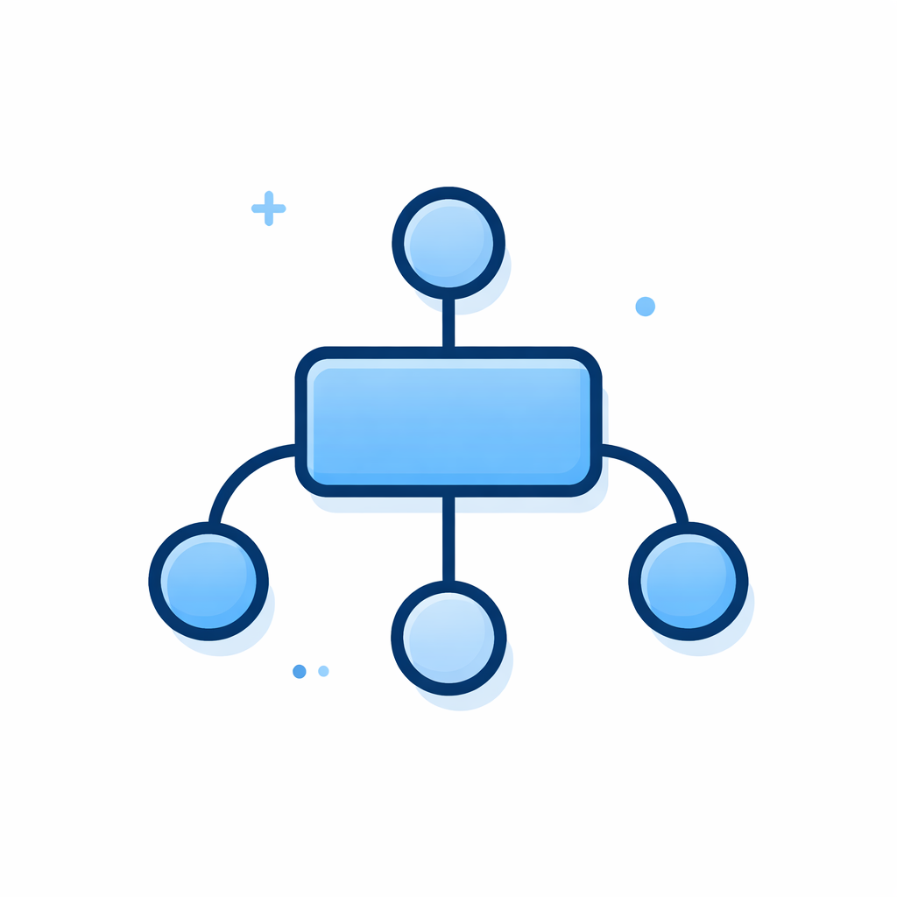

Mapa conceptual
Organiza ideas con relaciones jerárquicas claras y conexiones entre conceptos.

Abrir herramientaElige la herramienta con la que quieres trabajar. Este menú centraliza las opciones actuales y las funciones que se integrarán próximamente.
Organiza ideas con relaciones jerárquicas claras y conexiones entre conceptos.

Abrir herramientaEstructura ideas alrededor de un tema central con una vista rápida y visual.
Abrir herramientaVista resumida por niveles para organizar información por categorías y subcategorías.
Abrir herramientaHerramienta para extraer y recortar secciones de documentos PDF de forma rápida.
Abrir herramienta